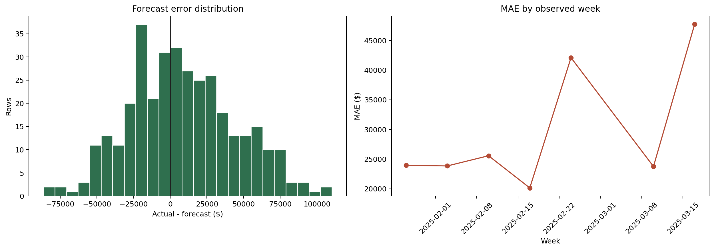

Phase 6, Step 2. Computed from the existing Notebook 06 walk-forward predictions; no model was trained, tuned, or modified.
| Attribute | Value |
|---|---|
| Prediction | y_hat_identity |
| Window | 2025-01-27 to 2025-03-17 |
| Coverage | 350 rows, 50 stores, 7 observed weeks |
| Missing actuals/predictions | 0 |
| Zero/near-zero actuals | 0 |
| Error convention | actual - forecast; positive = under-forecast |
The approved prediction frame contains 7 Mondays (350 rows). The 2025-03-03 forecast date is absent from all_forecasts; all other Mondays from 2025-01-27 through 2025-03-17 are present, and no rows were imputed or reconstructed.
| MAE | WMAPE | ME | RMSE | MAPE | sMAPE |
|---|---|---|---|---|---|
| $29,578 | 6.07% | $8,526 | $37,233 | 6.66% | 6.74% |
The model under-forecasts on average because ME is $8,526. MAE and WMAPE are the headline measures. MAPE is stable in this window because there are no zero or near-zero actuals.

2025-03 (MAE $35,745, WMAPE 7.25%).HOLIDAY_FAMILY_DAY (MAE $25,557).3.0: MAE $38,459, WMAPE 4.01%, ME $8,858.CENTRAL: MAE $32,904, WMAPE 5.79%, ME $9,858.large: MAE $30,624, WMAPE 4.41%, ME $10,318.Full month, ISO-week, date, holiday/event, cluster, region, and archetype decompositions are in the CSV artifacts.
The following points are the five largest absolute misses on 2025-03-17, the date already covered by additive pred_contrib explanations:
These contributions explain how the model formed each prediction. They are associative model evidence, not proof that a feature caused the observed miss. Globally, the model is lag-led (75.4% gain, almost entirely lag1), so unusually stale or shifted recent-sales signals are a plausible model-level interpretation where lag contributions dominate; calendar and static effects should be read similarly as model behavior, not business causality.
y_hat_identity prediction approved at Checkpoint 6.2; it does not compare transform variants or direct per-cluster forecast outputs.BASELINE_WEEKLY_SALES remains a near-target proxy in the live model and may make apparent performance optimistic.3.0 and erratic) produce less stable segment conclusions.| File | Description |
|---|---|
error_metrics.csv | Overall approved-window metrics |
error_by_calendar.csv | Month, ISO week, date, and holiday/event metrics |
error_by_segment.csv | Cluster, region, and archetype metrics |
error_distributions.png | Error distribution and weekly MAE |
Source image: C:\Users\mabellani\REPOSITORY\FORECASTING\time-series-forecasting-accelerator-agent\.output\supermarket_net_sales_forecast_20260603\post_forecasting\error_distributions.png
